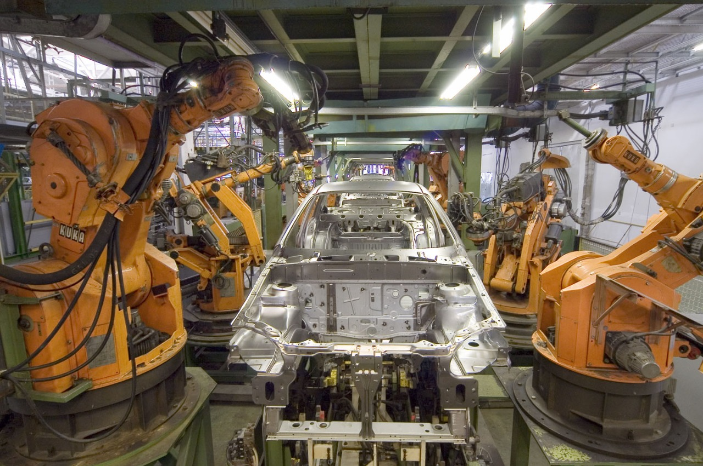

History of Robot
The history of robots dates back to ancient history. One of the earliest recorded examples of a robot was the ancient Greek myth of Pygmalion, who created a statue that was brought to life. In the Middle Ages, Leonardo da Vinci designed plans for a humanoid robot, but it was not built. The modern concept of robots, however, began to take shape in the early 20th century. In the 1920s and 1930s, researchers and inventors began to build robots that could perform simple tasks, such as moving objects or following a light source. During World War II, robots were used in manufacturing to reduce the need for human labor. In the 1950s and 1960s, the space race between the United States and the Soviet Union led to the development of robots for use in space exploration. In the 1970s and 1980s, robots began to be used in a wider range of industries, including automotive manufacturing and healthcare. The development of the internet and advances in artificial intelligence have also led to the creation of robots that can communicate and make decisions on their own. Today, robots are used in a variety of industries, including manufacturing, healthcare, retail, and even entertainment. They are also being developed for use in hazardous environments, such as in search and rescue operations and in space exploration.
| 12th and 13th centuries AD | 19th century | 1950s and 1960s | Since 2000. |
|---|---|---|---|
| The Muslim scientist, who is of being one of the greatest engineers and mechanical inventors, has designed water watches and other machines, such as a hand washing machine that provides soap and towels to its user. | Automatic dolls have been created in Japan capable of serving tea, shooting arrows or paint, called (Karakuri games). |  The term artificial intelligence emerged and designed the first expert system to solve difficult sports problems, and designed the industry's first robot arm. | The new generation of robots that resemble the human robot and have been dubbed human robots has emerged and has been used in space research by NASA. |